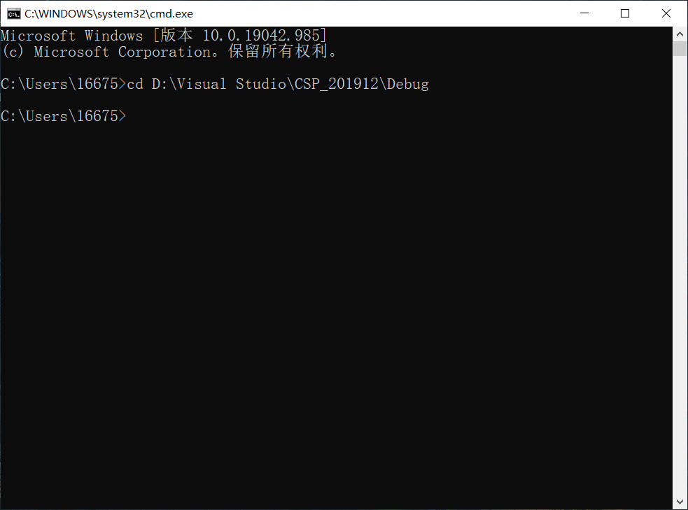
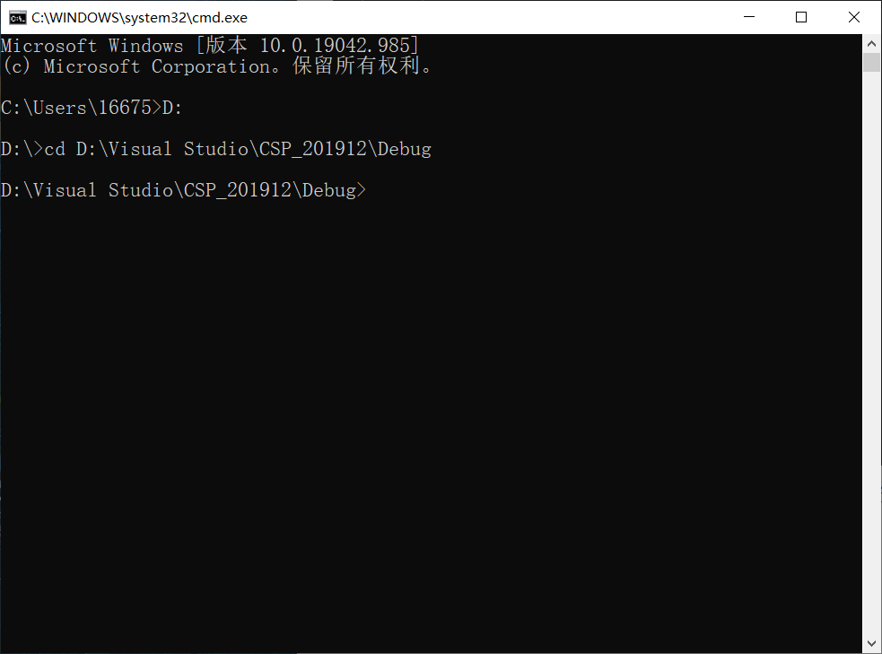

文件路径的表示方法
文件路径作为计算机基础内容，在很多时候都扮演着十分重要的角色，例如控制台命令、资源文件的存放等等，以下将介绍计算机文件路径的表示方法以及一些常见的使用场景。
文件路径的表示分为两种方式：绝对路径表示法和相对路径表示法。
绝对路径与相对路径的区别
绝对路径的表示
绝对路径顾名思义就是文件在硬盘上存储的真正路径，它不会被更改，除非文件在硬盘中的位置发生改变。绝对路径表示格式为：“\<硬盘符>\\<目录1>\\<目录2>…\\<文件名>”，例如test.txt文件存储在C盘cat1下的cat2的cat3中，它用绝对路径表示为C:\cat1\cat2\test.txt。
相对路径的表示
相对路径表示从当前文件位置出发，指向目标文件的路径，它是目标文件与当前文件的相对位置，会随着当前文件位置的不同而使与同一文件的相对位置发生改变。相对路径的表示格式为：“./\<目录1>/\<目录2>…/\<文件名>”（这里的“./”可以省略），例如当前HTML文件root.html位于C盘根目录下，text.txt文件存储在C盘cat1文件夹下的cat2文件夹中，要想在root.html中引用text.txt则用相对路径表示为cat1/cat2/test.txt（“./”已省略）。
如果想要表示当前文件上级目录的文件，可以使用“../”来表示，还是上面的例子，假如我们要在test.txt文件下用相对路径表示root.html，则可以表示为../../root.html。
注意事项
- 不同盘符间的文件不能用相对路径来表示，例如位于C盘下的文件无法使用相对路径来表示D盘中的文件，其实可以这么来理解：所谓相对路径，就是相对非根目录的某个目录的绝对路径。
- 绝对路径不同目录间既可以用“\”也可以用“/”来分隔，而相对路径只能用“/”，这里推荐表示绝对路径时使用“\”，可以为两种表示方法做一个很好的区分。
常见使用场景
控制台命令”cd”
“cd”命令可以更改执行控制台命令的目录，这个目录既可以用绝对路径表示也可以用相对路径表示，但是无论哪种路径表示都只能更改为初始盘符中的目录，也就是系统盘目录。

如果要更改执行目录为其他盘符下的目录，可以先输入“\<硬盘符>”，比方说要切换到上图试图切换的目录，可以先输入D:，然后再选择绝对路径。

程序中资源的引用
如果想要在编写的程序中引用外部资源文件（图片、音频等等），则必须要用相对路径，除非你编写的程序只需要在你当前设备上运行。因为你的程序往往放在一个大的文件夹当中，当这个大的文件夹被放置在计算机不同目录下时，资源文件的绝对路径也不相同，而源代码与资源文件之间的相对位置则是保持不变的，这保证了只要用户不刻意的去改变资源文件的存放位置，那么不管整个文件夹被放置在何处，资源文件都能被正常的引用。
 微信
微信 支付宝
支付宝